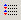

Окно
котировок
Окно котировок "Обзора рынка" (Market watch) и является служебным наряду с окном
"Навигатор" (Navigator) и "Торговым терминалом" (Terminal). Все эти окна - плавающие, их можно
перемещать по экрану для представления в удобном виде. Окно котировок
"Обзор рынка" может быть выключено/включено при помощи нажатия комбинации
клавиш "Ctrl - M", из главного меню "Вид - Обзор
рынка" (View - Market watch), либо нажатием на
панели инструментов кнопки 
В окне котировок "Обзора рынка" помещается список
обозначений финансовых инструментов (в дальнейшем инструментов), с
которыми пользователь намерен работать в текущем счете. После загрузки в
новый каталог клиентского терминала MetaTrader список будет состоять из
инструментов, чьи окна с графиками созданы в начальном профиле и
представлены в меню "Окна" (Window). При
следующих загрузках клиентского терминала восстанавливается последний
перед закрытием терминала список. При нажатии правой кнопки мыши в области
окна котировок "Обзор рынка" появляется контекстное меню, из которого
можно выполнить команду "Показать все символы" (Show All
Symbols). В этом случае в список попадут все разрешенные к
использованию в текущем счете (доступные) инструменты. По этим
инструментам начнут приходить котировки в формате "bid;
ask; high; low; time". Для минимизации трафика можно исключить
некоторые инструменты из окна котировок "Обзор рынка" при помощи команды
контекстного меню "Скрыть символ из списка" (Hide
Symbol), или нажатием клавиши "Del". В
этом случае котировки будут приходить только по оставшимся в списке
инструментам. Изменить вид окна котировок "Обзор рынка" можно при помощи
команд, расположенных в третьей части контекстного меню. Открыть окно
графика по интересующему инструменту можно, выполнив команду "Окно
графика" (Chart Window) из контекстного меню. При
выборе команды "Новый ордер" (New Order), либо
при нажатии клавиши "F9", либо по двойному щелчку
мышью на выбранном инструменте будет вызвано окно "Новый ордер". Командой
"Скрыть все символы" из списка удаляются все инструменты кроме тех, чьи
окна графиков созданы в текущем профиле.
Для включения инструмента
в список окна котировок "Обзор рынка" нужно выполнить команду "Показать
символ" (Show Symbol). На экране появляется окно
"Инструменты" (Securities), в котором находится
список всех разрешенных к использованию в текущем счете (доступных)
инструментов.

Последовательно выбирая нужные инструменты и
выполняя каждый раз команду "Показать символ", которая появляется в окне
"Инструменты" в случае, если инструмент отсутствует в списке окна
котировок "Обзор рынка", пользователь подготавливает выбранные инструменты
к включению. Список окна котировок "Обзор рынка" изменится после нажатия
кнопки "OK" в окне "Инструменты".
Команда
"Скрыть символ" (Hide Symbol) окна "Инструменты"
удаляет инструмент из списка окна котировок "Обзор рынка".
Выполнением
команды контекстного меню окна котировок "Окно котировок"(Popup prices) либо нажатием клавиши "F10" можно вывести на экран окно котировок "Текущие
котировки"(Popup prices) .
Список инструментов окна котировок "Текущие
котировки" совпадает со списком окна котировок "Обзор рынка". В
контекстном меню окна котировок "Текущие котировки" можно задать режим
"Всегда сверху"(Always on the Top), после чего
окно котировок "Текущие котировки" располагается поверх любых открытых на
рабочем столе окон.
Внимание: После закрытия клиентского терминала
MetaTrader окно котировок "Текущие котировки" закрывается!
Используя
технологию "Drag'n'Drop" (переместить и бросить)
можно перемещать инструменты в списке окна котировок "Обзор рынка", а
также заменять график в любом открытом окне графика на график выбранного
инструмента.
Назад Содержание Далее